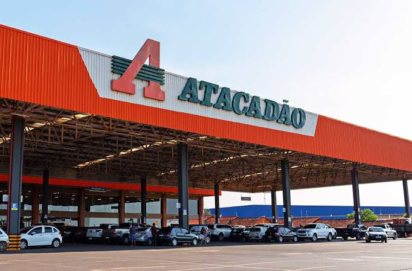

Para onde vou???
Já pensou para onde ir após terminar seu curso de Desevolvimento de Sistemas, Sistema da Informação ou Engenharia? Hoje você conhecera algunas vagas que são otimas opções para começar sua carreira
Atacadão

Atacadão é uma rede brasileira de supermercados atacado-varejista,
pertencente ao Grupo Carrefour Brasil.
Além do Brasil, o modelo foi exportado para a Argentina, Marrocos,
Romênia, França, Tunísia, Egito e Espanha, em alguns destes países com
as bandeiras Carrefour Cash & Carry, Supeco e Carrefour Maxi. Algumas
unidades contam com serviços, como: Atacadão Posto e Atacadão
Drogaria.
Sua atuação no Brasil está em todos os estados brasileiros e no
Distrito Federal. Possui mais de 380 lojas de autosserviço e mais de
34 atacados/centros de distribuição espalhados pelo Brasil.
Vantagens:
- Refeição no local
- Vale-transporte
- Estacionamento
- Assistência odontológica
- Assistência Médica
Dentre outros benefícios
Vagas aquiUber
A Uber é uma empresa de tecnologia que oferece serviços de mobilidade
e transporte por meio de seu aplicativo.
A plataforma conecta passageiros e motoristas parceiros, permitindo
que os usuários solicitem viagens de forma rápida e prática. Além do
transporte de passageiros, a Uber também oferece serviços de entrega
de alimentos e outros produtos por meio de sua plataforma.
Presente em diversos países ao redor do mundo, a empresa se tornou uma
das principais plataformas de mobilidade urbana. No Brasil, a Uber
está presente em diversas cidades e oferece oportunidades para
motoristas, entregadores e profissionais de diferentes áreas.
Vantagens:
- Flexibilidade de horários
- Possibilidade de ganhos extras
- Trabalho pelo aplicativo
- Autonomia para escolher os horários de trabalho
- Possibilidade de trabalhar em diferentes regiões
Dentre outras oportunidades e benefícios
Saiba mais aqui